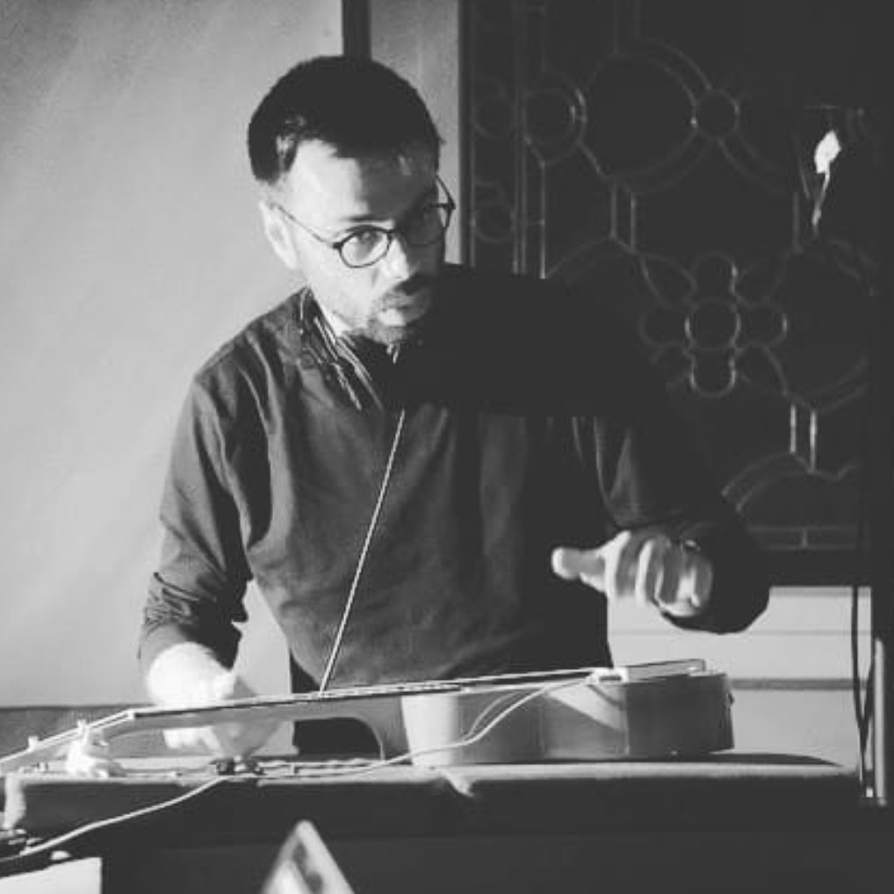

CROWN was a series of live broadcasts by Usmaradio during the lockdown of spring 2020, fighting the lockdown through radio. Episode XV was with Roberto Paci Dalò, and I performed live from my home in Weimar.
CROWN XV
Usmaradio, San Marino, 2020
